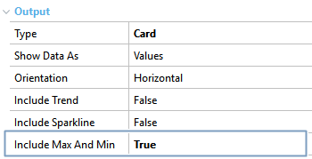
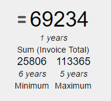

Include Max and Min property it's a QueryViewer control and a Query object property. It's only available when the Type property in QueryViewer control has the Card value assigned and allows displaying (under the Card indicator) the highest and lowest value taken by the indicator. Values
DescriptionIf the Query object includes a Date or DateTime attribute, the highest and lowest values that the indicator took can be calculated and shown by setting the Include Max and Min property in True:  The values are displayed on the Card's indicator:  AvailabilityThis property's available as of GeneXus 15 Upgrade 2 See also |
| Backlinks | ||
| Dashboard Card Include max and min property | Include Sparkline Property | Include Trend Property |
| Orientation Property | Query Card Type |